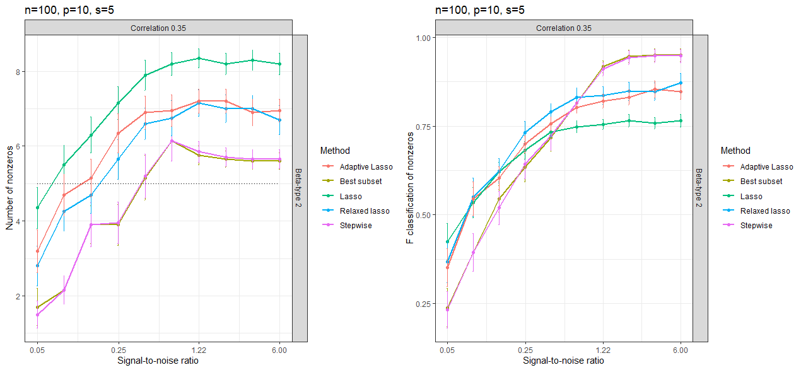

A comparison of methods for variable selection
Final project
Abstract
In this project, we continue work on the comparison between different predictors done in Tibshirani et al, namely best subset, forward stepwise selection, lasso, and relaxed lasso. To this comparison, we also add adaptive lasso. Further, we investigate the performance of these predictors on data drawn from a non-Gaussian setting, namely the covariates matrix drawn from a multivariate t-distribution, to examine these various predictors in the presence of a greater number of extreme values.
1 Introduction
In regression and other statistical settings, it is often quite important to perform variable selection to improve modeling. In particular, we are frequently tasked with this in settings where the number of observations in our design matrix n is not much greater than the number of covariates p and thus the model may have more variance than desirable and consequently tends to overfit, resulting in poor prediction accuracy. A setting in which variable selection is even more necessary is where p > n, and thus our design matrix is rank-deficient, and consequently collinearity will arise for the model produced with all p covariates. Variable selection is also useful when the number of true nonzero coefficients is small compared to the number of covariates p, either if n is bigger or smaller than p. Hence, selecting variables is desirable in order to reduce variance, overfitting, and prevent collinearity. Additionally, variable selection may be desired simply for the sake of model interpretability, a quality becoming evermore important as such models make their way increasingly into the public sphere. Many different formulations for variable selection have been developed to solve this problem. Included in these are best subset, forward stepwise, and lasso and its myriad variations, which will be the methods on which we focus in this paper.
The presence of extreme values in doing variable selection is of interest to us. Particularly, we investigate the setting in which the covariates are drawn from a more heavy-tailed distribution than the normal or Gaussian. We wish to examine whether there are any differences between the ability of our different methods in predicting and selecting in the Gaussian case and the more heavy-tailed case, in particular the multivariate t-distribution.
2 Preliminaries
In the setting of linear regression, we let our design matrix be denoted by X \in \mathbb{R}^{n \times p}, where n represents the number of observations in the system and p the number of covariates. Further, we let y \in \mathbb{R}^n denote the response vector. We model the relationship between y and X in the classical linear way, where y = X\beta + \epsilon. We assume the the error term \epsilon to be normally distributed. Traditionally, given this model, we want to solve the least-squares problem min_{\beta \in \mathbb{R}^p} || y-X\beta||^2. However, as noted earlier, we are often faced with a setting in which we want to do variable selection.
2.1 Best Subset
Best subset is often considered the ideal in terms of performing variable selection, as it fits all possible models, that is, all 2^p models, and chooses whichever model performs best. Choosing the “best” model is usually performed by first choosing whichever model for each number of variables ({1,..., p}) has the lowest residual sum of squares, deviance, or highest R^2, and from these p models, then choosing whichever has the best cross-validated prediction error, AIC, BIC, or adjusted R^2 (Gareth James and Tibshirani, 2013). More formally, best subset solves the problem: min_{\beta} ||y-X\beta||^2 + \lambda \sum_{i=0}^p I(\beta \neq 0), where \lambda \geq 0 is a tuning parameter. Moreover, best subset is very desirable because it is most likely to pick the true model in straightforward scenarios. However, it is certainly not without its issues. Particularly, best subset is very computationally complex, as 2^p clearly grows exponentially with p, so it is not practical for use with large p. There have been a number of attempts to remedy this issue, such as branch-and-bound techniques in different statistical software, though many are still constrained to p<30 (Gareth James and Tibshirani, 2013). However, recently, Bertsimas et al. derived a much faster way to do best subset using mixed-integer optimization techniques (Dimitris Bertsimas and Mazumder, 2016). Despite this, best subset is still much more computationally costly than other variable selection methods.
2.2 Forward Stepwise
Forward stepwise is considered a common alternative to best subset. Forward stepwise starts with a null model and then adds covariates one-by-one to the model by which improves the fit best and stops when there’s no improvement in fit (Gareth James and Tibshirani, 2013). It is much less costly than best subset, as it fits \sum_{i=0}^{k+1} (p-i) models, where k is the number of predictors in the best model, compared to best subset’s 2^p. As is the case with best subset, forward stepwise most often uses the biggest reduction in AIC, deviance, residual sum of squares or increase in adjusted R^2 to choose the best fit. It’s important to note that forward stepwise selects covariates for the model without shrinking the coefficients, much like best subset. Thus, it is a good choice for situations in which one does not want to perform shrinkage. However, forward stepwise does not always choose the best model (Gareth James and Tibshirani, 2013). To demonstrate this, take as an example a setting in which p=3 and in which covariates x_2 and x_3 are the covariates of the true model. However, it is quite possible the covariate that provides the largest reduction in AIC from the null model (or any other metric) could be x_1. Thus there is no way for forward stepwise to choose the best model in this setting. Even more, it is possible that there is no improvement by adding x_2 and x_3 to this model. Then forward stepwise will not even choose a correct model (one in which all the true covariates are included, but so are others).
2.3 Lasso
Lasso is another method for variable selection that also performs shrinkage on the coefficients. More formally, lasso solves the minimization problem: min_{\beta} ||y-X\beta||^2 + \lambda \sum_{j=0}^p | \beta_j | in the linear regression context, where \lambda \geq 0. Lasso is a very computationally efficient method for performing variable selection, especially if it is given the value of \lambda, as it is a convex problem. However, more frequently, the choice of \lambda is done via cross-validation or grid search (Gareth James and Tibshirani, 2013). Despite its computationally efficient properties, lasso presents a trade-off between biased coefficient estimates and variable selection, since it cannot do variable selection without biasing the chosen coefficients due to the fact that it also performs shrinkage (Dimitris Bertsimas and Mazumder, 2016). Thus, lasso may be an undesirable choice in a setting where we are certain of our data (i.e. noise \epsilon is almost non-existent). However, there are many variations on lasso that try to correct for its issues.
2.3.1 Relaxed Lasso
Relaxed lasso was devised in order to decrease the influence of shrinkage on the coefficients. It is performed by first computing the lasso coefficients \hat{\beta}_{lasso}(\lambda) and then taking a convex combination of this vector of coefficients and the one calculated by performing normal least-squares regression on the variables selected by lasso. More formally, let X' be the subset of the design matrix that lasso selects. Then we let \hat{\beta}_{LS}(X') be the least-squares coefficient computed on X'. Finally, we defined the relaxed lasso coefficients to be \hat{\beta}_{RL}(\gamma, \lambda) = \gamma \hat{\beta}_{lasso}(\lambda) + (1-\gamma)\hat{\beta}_{LS}(X'), where \gamma \in [0,1] and \lambda \geq 0 (Trevor Hastie and Tibshirani, 2020a).
2.3.2 Adaptive Lasso
Adaptive lasso, like relaxed lasso, also attempts to reduce the bias of lasso. However, it tries to accomplish this by reweighting the coefficients by an “initial” estimate of \hat{\beta}. This can be performed in any number of ways, including by regular least-squares and ridge regression. Formally, we let \hat{\beta}_{init} be the initial estimate of the coefficients. Then adaptive lasso is performed by solving the problem min_{\beta} ||y-X\beta||^2 + \lambda \sum_{j=0}^p \frac{| \beta_j |}{ | \hat{\beta}_{init,j} | }, where \lambda \geq 0 is once again a tuning parameter (Zou, 2006).
2.3.3 Elastic Net
Elastic net is an approach proposed to utilize the variable selection of lasso, while maintaining the predictive performance of ridge regression. Therefore, elastic net in general performs more shrinkage than lasso. It is useful in settings where we are interested in shrinking coefficients more than lasso does, while also being able to perform variable selection. It is accomplished by solving the minimization problem min_{\beta} ||y-X\beta||^2 + \lambda(\alpha||\beta||^2 + (1-\alpha)|\beta|), where \alpha \in [0,1] serves as a weight (Zou and Hastie, 2005).
3 Simulations
Our simulation compares the five different variable selection methods described above, best subset, forward stepwise, lasso, relaxed lasso, and adaptive lasso. For adaptive lasso, we reweighted the coefficients by an “initial” estimate of \hat{\beta} obtained performing ridge regression on the centered and standardized data. For relaxed lasso, we consider when \gamma = 0.5 as in (Trevor Hastie and Tibshirani, 2020a). We remark that in the mentioned paper, the authors chose \gamma with grid search over 10 equally placed values in the interval [0,1]. However, in order to be consistent and comparable with the analyzed paper, we did not choose the \gamma hyperparameter by cross-validation or grid search, but kept the value of \gamma obtained from their grid search. On the other hand, we tuned lasso and related methods on 50 values of \lambda.
We were also interested in evaluating the elastic net performances in sparse settings. As we might have expected, it either always followed lasso, when values of \alpha were large enough, or it underperformed, when it became close to essentially performing ridge regression. Hence we decided to not include it in the report, except for Figure 9. We will discuss this further in Section 3.3.
In order to reproduce the results of (Trevor Hastie and Tibshirani, 2020a), we used both the bestsubset package (Trevor Hastie and Tibshirani, 2020b) in R and coded some other functions ourselves. We decided to implement the lasso function and its variants using glmnet package (Trevor Hastie and Tay, 2023) in order to have a faster and more updated version of the algorithm. To perform best subset and forward stepwise we used the bestsubset package.
We adopt the same evaluation metrics used in (Trevor Hastie and Tibshirani, 2020a) to assess our estimators. Letting x_0 \in \mathbb{R}^p, y_0 \in \mathbb{R} be a single observation of the data and response respectively, they are defined as follows:We reproduce our simulations for both the normal and the extreme values settings.
3.1 Normal Design
We follow the simulation setup of (Trevor Hastie and Tibshirani, 2020a), who in turn follow the simulation setup of (Dimitris Bertsimas and Mazumder, 2016). We first define \rho to be the correlation factor between values in X and the signal-to-noise ratio (SNR), \nu to be the ratio of the variance of X\beta to \epsilon. In this section, we draw the rows of the design matrix X \in \mathbb{R}^{n \times p} from multivariate normal distributions \mathcal{N}_p(0, \Sigma), where the entry (i,j) of \Sigma is equal to \rho^{|i-j|}, and y \in \mathbb{R}^n from \mathcal{N}_n(X\beta, \sigma^2 I), where \sigma^2 = \frac{Var(X\beta)}{\nu}. Further, we pull our true \beta \in \mathbb{R}^p from a scheme devised in terms of the level of sparseness s \in \mathbb{R} which (Trevor Hastie and Tibshirani, 2020a) call “beta-type 2”, where the first s entries of \beta are equal to 1 and the rest are 0. We also simulated data from the “beta-type 5” scheme, characterized by the first s entries of \beta equal to 1 and the rest decay exponentially to 0, \beta_j = 0.5^{j-s} for j > s; but in the following we do not report results obtained using “beta-type 5” as they were very similar to the ones obtained with “beta-type 2”.
We consider the settings in the following table:
| Setting | n | p | s |
|---|---|---|---|
| Figure 1 | 70 | 30 | 5 |
| Figure 2, Figure 3 | 100 | 20 | 5 |
| Figure 4, Figure 5, Figure 6 | 100 | 10 | 5 |
Throughout we keep s (number of non-zeros) constant in order to more easily compare across settings. We consider the same range of SNR as in (Trevor Hastie and Tibshirani, 2020a), from 0 to 6, the reasoning of which is explained in their paper. Further, we remark that since best subset selection takes 44 hours to run even in the case of n = 50, p = 100, we could not reproduce all the settings proposed in (Trevor Hastie and Tibshirani, 2020a).
In Figure 1, we see how the different methods compare in terms of effective degrees of freedom, as done in (Trevor Hastie and Tibshirani, 2020a). We have the same results as (Trevor Hastie and Tibshirani, 2020a), in addition to adding adaptive lasso and elastic net. As we can see the degrees of freedom as a measure of the aggressiveness of the methods, we can say that best subset and forward stepwise are the most aggressive. Due to shrinkage, the effective degrees of freedom of lasso is equal to the expected number of selected variables. Relaxed lasso and adaptive lasso act in the same way. It is important to note depending on the settings, different methods can perform better. However, since relaxed lasso and adaptive lasso are in between lasso and best subset, they act more consistently than the others. We expect that when the SNR is low, and also depending on other factors like correlation between predictor variables, the more aggressive best subset and forward stepwise methods could lead to estimators with high variance and worse accuracy than lasso. On the other hand, in high SNR settings, the shrinkage applied by the lasso estimator can result in unwanted bias and worse accuracy than best subset and forward stepwise.
In Figure 1 we included the relaxed lasso with \gamma = 0 as in a new paper (Trevor Hastie and Tibshirani, 2023), where the authors implement forward stepwise in this way. We see that the two implementations differ from each other. This alternative forward stepwise acts more similarly to adaptive and relaxed lasso. The possible explanation for this difference is the fact that in (Trevor Hastie and Tibshirani, 2020a) the authors implement a forward stepwise based on QR decomposition (Trevor Hastie and Tibshirani, 2020a).
3.1.1 Results
Each plot was obtained by averaging the given metric over 20 repetitions. Hence for each metric we have the estimate and its 0.95 confidence interval, depicted by vertical lines. When not otherwise marked, the correlation level is kept at 0.35.
In Figure 2 we look at the performance of the five methods according to relative test error in terms of how well they predict the true number of nonzeros. We see that for high SNR (SNR = 3), all the methods perform quite similarly with best subset and stepwise being the best. These methods find the true number of nonzeros in this case. When the signal-to-noise ratio is decreased, the plot starts to look different. In the low SNR setting (SNR = 0.1), instead, lasso outperforms all other methods, which makes sense due to the fact that it performs more shrinkage than any other method. Overall, relaxed lasso and adaptive lasso perform the best - they are both accurate in low and high SNR settings, due to the fact that they are malleable to settings where shrinkage needs to be performed (low SNR) and where it does not (high SNR): relaxed lasso uses its \gamma parameter to do so, while adaptive lasso relies on the ridge penalty.
In addition to using glmnet, we also reproduced the plot using the relaxed lasso function provided in bestsubset package. The result shown in Figure 3 is a bit surprising, hence there might be an error in the relaxed lasso function of the bestsubset package, which cannot be easily interpreted.
We decided to investigate the role of correlation in the different methods’ performance, as it was not a central argument in the paper (Trevor Hastie and Tibshirani, 2020a). In this case we kept the SNR constant and changed the correlation from a low (0.2) to a higher (0.7) value. In Figure 4 we compare the various methods according to relative risk. Looking at the two subplots of Figure 4, we see that when the correlation is low, best subset and forward stepwise select close to the true number of nonzeros, which is 5, while the other methods are predicting higher values (around 7). In the higher correlation setting, relaxed and adaptive lasso are the best, while best subset and forward stepwise underestimate the number of nonzero coefficients.
Now we focus on the setting with n = 100, p = 10, s = 5 and \rho = 0.35. Results are shown in Figure 5 and Figure 6.
In Figure 5 we examine our different methods in terms of the proportion of variance explained on the right and in terms of relative test error on the left. The dotted line in the left subplot denotes the performance of the null model and in the second, the perfect score.
In Figure 5, in the left plot we see that forward stepwise and best subset perform worse than the others for low SNR levels, but for high SNR levels they perform the best. From the lasso family, adaptive lasso performs the best overall, because for high SNR it acts similarly to best subset and forward stepwise. On the right plot we see that in terms of proportion of variance explained, all of the models are roughly equivalent and converge to the true value.
In the left subplot of Figure 6, we consider the number of nonzeros predicted by the methods as SNR varies. We remark that the true number of nonzeros in this setting is 5. We see that for low SNR the lasso family is the best, while for high SNR, best subset and forward stepwise are the best. Lasso also performs quite badly in this case, as “sparser solutions entail too much shrinkage” (Trevor Hastie and Tibshirani, 2020a). However, it is also quite interesting to note that as SNR increases, we do not see that any of our models necessarily go to the true number of p, but rather consistently plateau above the true value.
In the right plot of Figure 6, we look at the performance of different prediction methods in terms of F-score. So again we have the situation that for low SNR the lasso family performs the best and for high SNR, best subset and forward stepwise perform better.

3.2 Extreme Value Design
In addition to the replication of the work done in (Trevor Hastie and Tibshirani, 2020a), we chose to extend their work by investigating the performance of our chosen predictors in a setting where the design matrix may have more extreme values.
In this section, we draw the rows of the design matrix X \in \mathbb{R}^{n \times p} from the multivariate student-t distribution \mathcal{T}_{\eta}(0, \Sigma), where the entry (i,j) of \Sigma is equal to \rho^{|i-j|}. \Sigma now denotes the scale of the student distribution, and Var(X) = \frac{\eta}{\eta-2}\Sigma, where \eta is the degrees of freedom. We simulate y \in \mathbb{R}^n from \mathcal{N}_n(X\beta, \sigma^2 I), where \sigma^2 = \frac{Var(X\beta)}{\nu} = \frac{\eta\beta^T\Sigma\beta}{(\eta-2)\nu}. Further, we pull our true \beta \in \mathbb{R}^p using the same scheme as before.
We will only look at the number of nonzeros and F-score in the setting that we chose. This is due to the fact that the relative risk, relative test error and proportion of variance explained have the same expression in both the normal and student-t case, since we keep the \Sigma the same as in the normal case, and thus introduce the same multiplicative constant in front of the variance of both X\beta and \epsilon, which will thus cancel out.
3.2.1 Results
Each plot was obtained by averaging the given metric over 20 repetitions. When not otherwise marked, the correlation level is kept at 0.35 and the degrees of freedom of the student t-distribution is chosen to be 2.1, in order to emphasize the extreme value effect.
Figure 7 below depicts the number of non-zeros and the F-classification of nonzeros as functions of the signal-to-noise ratio.
Comparing this plot to Figure 6 we notice that the general shape of the plots is similar, but there are some notable differences. Namely, all of the methods work better in the normal setting, as the F-score of nonzeros is constantly lower for the multivariate t-setting compared to the normal one. In the normal setting, forward stepwise and best subset performed the best in the high SNR settings, but for the student-t case, this is not necessarily true.
Moreover, we wanted to focus our attention on how the performances of the methods vary as the degrees of freedom of the multivariate t-distribution degrees of freedom vary. In Figure 8 we vary the degrees of freedom of the student distribution, while keeping other factors constant (e.g. SNR = 1). This analysis is similar to the case when vary the SNR, because of the relationship between \sigma^2, SNR and the degrees of freedom. For small degrees of freedom we should get similar results to small SNR values, and similarly for high values. Thus, we get a similar shape to the left plot of Figure 7, however the values on Figure 8 are a bit shifted. We have that for the degrees of freedom considered, the best method is always the forward stepwise and best subset.
As the degrees of freedom is growing, the values obtained in Figure 8 are approaching the values in Figure 6 with the SNR 1. This is because of the fact that as the degrees of freedom are getting higher, the student distribution converges to the normal distribution. As a note, we are still in the extreme values setting as we are considering 10 as the biggest number of degrees of freedom.
3.3 A Note on Elastic Net
In our simulation we always considered elastic net with \alpha = 0.05, though we did not report our findings in previous sections due to its consistent poor performance in these settings. To choose \alpha, we used grid search with 5 equally placed points in [0,1]. The results obtained for the non-zero \alpha values were very similar to the case when \alpha = 1, which is equivalent to lasso, even in the 0.25 setting. Thus, we chose a value or 0.05, because only the \alpha = 0 case, which is equivalent to ridge, performed differently than lasso, but at a level of \alpha=0.05, we are still able to perform variable selection. Of course elastic net with very small \alpha is not a good model for variable selection with sparse data, but we noticed that in the context of very small SNR it performed better than the other methods, even if it was still rather poor. In Figure 9 you can see that according to F-score of nonzeros, elastic net is preferable to the other methods in the low SNR setting. This holds especially in the multivariate t-setting (right plot).

4 Discussion & Conclusion
Although it is clear that in low SNR settings, lasso consistently performed the best across different evaluation metrics and in high SNR settings best subset and forward stepwise performed the best, it is quite often the case in applications that you do not whether you are in a low or high SNR setting, or in other words, you do not know how good your data is. Therefore, it is clear from our results that adaptive lasso and relaxed lasso are the most preferable methods with which to perform variable selection, as they are the only methods that performed consistently in all SNR settings. As stated, in practice we usually do not know the level of SNR, so we prefer a model that can predict correctly without the assumption of that value. These results are similar to what was found in (Trevor Hastie and Tibshirani, 2020a), though we showed the value of having two schemes that are flexible to different SNR settings in adding adaptive lasso.
Moreover, we showed that in general, the different methods perform the same comparatively in the normal design case as they do in the extreme value design case, though they perform worse overall. This was an unsurprising result, as the design matrix has great influence on the estimation of \hat{\beta}. In further studies, it may be interesting to consider other distributions than multivariate t for investigating the relationship between extreme value design and methods for variable selection.
5 References
Dimitris Bertsimas, Angela King, and Mazumder, R. (2016). Best subset selection via a modern optimization lens. Annals of Statistics 44, 813–852.
Gareth James, T. H., Daniela Witten, and Tibshirani, R. (2013). An introduction to statistical learning with applications in r. Springer.
Trevor Hastie, B. N., and Tibshirani, R. (2023). Available at: https://cran.r-project.org/web/packages/glmnet/vignettes/relax.pdf.
Trevor Hastie, J. Q., and Tay, K. (2023). Glmnet package. Available at: https://glmnet.stanford.edu/articles/glmnet.html.
Trevor Hastie, Robert Tibshirani, and Tibshirani, R. (2020a). Best subset, forward stepwise or lasso? Analysis and recommendations based on extensive comparisons. Statistical Science 35, 579–592.
Trevor Hastie, Robert Tibshirani, and Tibshirani, R. (2020b). Bestsubset package. Available at: https://github.com/ryantibs/best-subset.
Zou, H. (2006). The adaptive lasso and its oracle properties. Journal of the American Statistical Association 101, 1418.
Zou, H., and Hastie, T. (2005). Regularization and variable selection via the elastic net. Journal of the Royal Statistical Society 67, 301–320.